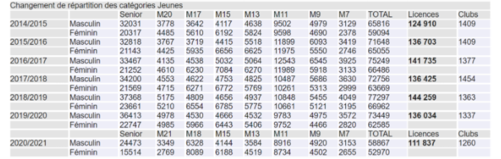

Marché du sport

Le volley-ball est un sport collectif connu qui oppose deux équipes de six joueurs, séparées par un filet, au-dessus duquel chaque camp doit renvoyer le ballon à la main.
Le Beach-Volley est un dérivé du volley-ball mais qui s’exerce sur la plage.
Le marché du volley dans sa généralité pèse 260,8 Millions de $ en 2021.
Ce marché s’étend au niveau mondial et compte un total de 220 pays adhérant à la Fédération internationale.
Il présente plusieurs produits, bien, services :
Le marché est actuellement en croissance, il avait été ralenti suite à la pandémie du covid 19 du fait que les salles soient fermées, des licenciés n'ont pas pu faire un seul match de l'année, l’interruption de la plupart des compétitions sportives au niveau mondial et national et l’impossibilité de pratiquer sur les plages et d’aller dans des magasins pour se procurer des équipements de volley. Mais en France son économie reste fragile et le volley à de la difficulté à s’imposer sur le devant de la scène du sport collectif français, la raison, une exposition médiatique faible qui impact l’ensemble du marché du volley.
Le covid-19 et la faible exposition médiatique a fait perdre 25% des licenciés et 27% des ressources financières soit 1,3 Millions d’euros. Le volley-ball et le beach-volley sont des sports très appréciés dans le monde, ils sont positionnés en 5ème position des sports les plus appréciés, derrière Le tennis (avec 1 milliard de fans) et devant le tennis de table (avec 875 millions de fans). Le volley-ball arrive avec environ 900 millions de fans ainsi que de personnes qui le regardent chaque année. Il est donc l'un des sports les plus populaires dans le monde.
Il est aussi en concurrence directe avec le basketball et le handball et se situe derrière ces deux sports. Concurrence également du badminton et du futsal en forte croissance, utilisant de plus en plus de créneaux de salles. Le volley dans sa globalité compte 269 millions de pratiquants dans le monde, en France le nombre de pratiquants est estimé à 1,8 millions. (2017) Mais officiellement, la Fédération Française de Volley compte en 2020/2021, 111 837 licenciés pour 1 260 clubs, avec une légère baisse comparée à 2019/2020 qui compte 136 034 licenciés et 1337 Club et en 2018/2019 qui compte 144 259 licenciés et 1363 Clubs.
